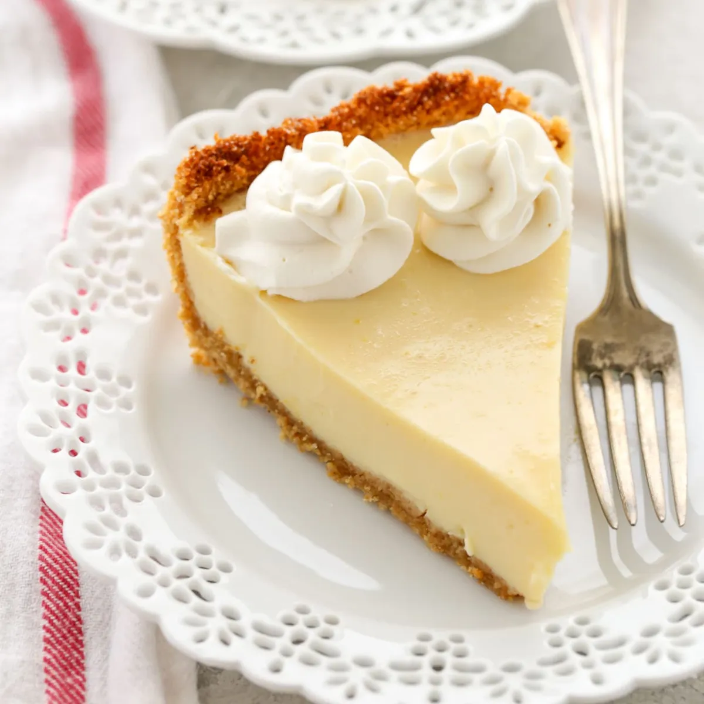

Lemon Pie

Lemon pie recipe
Originated in the Canary Islands, this sauce can be used to top potatoes, served with fresh bread rolls, or served
with white gouda cheese or goat cheese cubes. This sauce, whether mild or spicy, is a delightful addition
to any meal. You may add lime juice and or curry for added taste!
Ingredients
- For the sugar syrup
- 100g golden caster sugar
- For the cocktail
- ice
- 100ml vodka
- 50ml freshly brewed espresso coffee
- 50ml coffee liqueur (we used Kahlua)
- 4 coffee beans (optional)
Instructions
- Blend the bell peppers, garlic, paprika, cilantro, olive oil, chile pepper
- Bread the mix in a blender until liquefied.